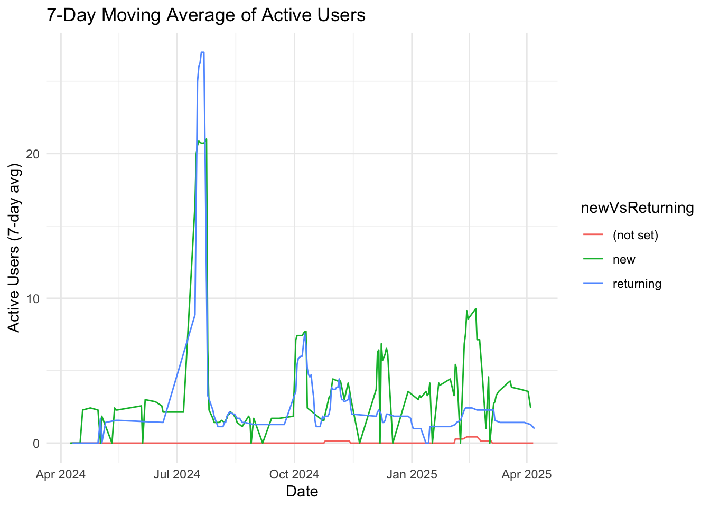

# library(programets)Google Analytics
What is Google Analytics?
Google Analytics is a web analytics service offered by Google that tracks and reports website traffic. It is currently a platform in the Google Marketing Platform brand. Google Analytics is the most widely used web analytics service on the web. It is a powerful tool that provides insights into how users interact with your website, allowing you to make data-driven decisions to improve user experience and optimize your marketing efforts. Google Analytics 4 (GA4) is the latest version of Google Analytics, which focuses on event-based tracking and provides more advanced features for analyzing user behavior across different platforms.
The googleAnalyticsR package
The googleAnalyticsR package is an R client for the Google Analytics API. It allows you to access and analyze your Google Analytics data directly from R, making it easier to integrate web analytics into your data analysis workflow. The package provides functions to authenticate with your Google account, retrieve data from Google Analytics, and perform various analyses on the data.
Getting started with googleAnalyticsR
## setup
library(googleAnalyticsR)
## authenticate
ga_auth(email = "seandavi@gmail.com")
#> ℹ 2025-04-08 08:49:11.893342 > Default Google Project for googleAnalyticsR is set. This is shared with all googleAnalyticsR users. If making a lot of API calls, please visit: https://code.markedmondson.me/googleAnalyticsR/articles/setup.html#professional-mode-your-own-google-project for instructions on setting your own Google Project
#> ℹ 2025-04-08 08:49:11.903126 > Setting client.id from options(googleAuthR.client_id)
## get your accounts
account_list <- ga_account_list("ga4")
## account_list will have a column called "viewId"
account_list$viewId
#> Warning: Unknown or uninitialised column: `viewId`.
#> NULL
## View account_list and pick the viewId you want to extract data from
ga_id <- 347971380The resulting res object will contain the data for the specified date range, metrics, and dimensions. You can view the first few rows of the data using the head() function.
library(googleAnalyticsR)
library(lubridate)
#>
#> Attaching package: 'lubridate'
#> The following objects are masked from 'package:base':
#>
#> date, intersect, setdiff, union
start_date <- Sys.Date() - 365
end_date <- Sys.Date() - 1
cat("Fetching daily data by New/Returning and Country...\n")
#> Fetching daily data by New/Returning and Country...
tryCatch(
{
daily_user_country_data <- ga_data(
propertyId = ga_id,
dimensions = c("date", "newVsReturning", "country"), # Added dimensions
metrics = c("activeUsers", "sessions"), # Example metrics
date_range = c(start_date, end_date),
limit = -1
)
cat("Successfully fetched", nrow(daily_user_country_data), "rows.\n")
print(head(daily_user_country_data))
},
error = function(e) {
cat("Error fetching data:\n")
print(e)
}
)
#> ℹ 2025-04-08 08:49:13.773646 > Downloaded [ 407 ] of total [ 407 ] rows
#> Successfully fetched 407 rows.
#> # A tibble: 6 × 5
#> date newVsReturning country activeUsers sessions
#> <date> <chr> <chr> <dbl> <dbl>
#> 1 2024-07-15 new United States 103 103
#> 2 2024-07-16 returning United States 61 219
#> 3 2024-07-17 returning United States 56 134
#> 4 2024-07-15 returning United States 53 78
#> 5 2024-10-02 new United States 38 38
#> 6 2024-07-16 new United States 30 30
library(ggplot2)
library(zoo)
#>
#> Attaching package: 'zoo'
#> The following objects are masked from 'package:base':
#>
#> as.Date, as.Date.numeric
library(dplyr)
#>
#> Attaching package: 'dplyr'
#> The following objects are masked from 'package:stats':
#>
#> filter, lag
#> The following objects are masked from 'package:base':
#>
#> intersect, setdiff, setequal, union
# Group by user type and country, then calculate rolling average
moving_avg_data <- daily_user_country_data %>%
arrange(date) %>%
group_by(newVsReturning, country) %>%
mutate(
activeUsers_7day_avg = rollmean(activeUsers, k = 7, fill = NA, align = "right"),
sessions_7day_avg = rollmean(sessions, k = 7, fill = NA, align = "right")
) %>%
ungroup()
# Let's see the results
head(moving_avg_data)
#> # A tibble: 6 × 7
#> date newVsReturning country activeUsers sessions activeUsers_7day_avg
#> <date> <chr> <chr> <dbl> <dbl> <dbl>
#> 1 2024-04-08 new United St… 1 1 NA
#> 2 2024-04-09 new United St… 3 3 NA
#> 3 2024-04-09 (not set) United St… 0 2 NA
#> 4 2024-04-10 new United St… 6 6 NA
#> 5 2024-04-10 returning United St… 3 5 NA
#> 6 2024-04-10 (not set) United St… 0 1 NA
#> # ℹ 1 more variable: sessions_7day_avg <dbl>
# Plot the moving average for active users
moving_avg_data %>%
group_by(date, newVsReturning) %>%
summarise(activeUsers_7day_avg = sum(activeUsers_7day_avg, na.rm = TRUE)) %>%
ggplot(aes(x = date, y = activeUsers_7day_avg, color = newVsReturning)) +
geom_line() +
labs(
title = "7-Day Moving Average of Active Users",
x = "Date",
y = "Active Users (7-day avg)"
) +
theme_minimal()
#> `summarise()` has grouped output by 'date'. You can override using the
#> `.groups` argument.